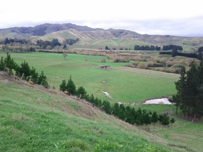
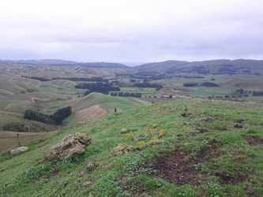
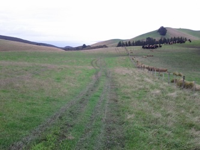

www.rogaine.org.nz |
Heights Of Winter 2014 "Blythe Downs and Ups" 12 and 6 hour Rogaines Saturday 14th June, North Canterbury |


| Download this Information (50KB PDF) | |
| Instructions for Competitors (65KB PDF) | List of Entrants |
CANCELLED - see the notification
| Date: | Saturday 14th June 2014 | ||||||
| Time: | 12 hour event - 9am to 9pm, registration and course planning from 7am 6 hour event - 11am to 5pm, registration and course planning from 9.30am | ||||||
| Location: | Blythe Valley, North Canterbury - a 100km, 90 minute drive north of Christchurch. | ||||||
| Accommodation: | There is a variety of camping, motels and baches available in Amberley, Greta Valley, Motunau Beach, Cheviot and Gore Bay | ||||||
| Terrain: | Rolling land and hills with elevation range of 500m. Vegetation is a mix of open grassland, scrub, native forest, and some plantations. | ||||||
| Map: | The map will be derived from Topo50, the NZ standard topographic map with 20m contours. It will be pre-marked with checkpoint sites and out of bounds areas. Map size and scale will be notified closer to the event. | ||||||
| Instruction: | Available to those needing it on the day. | ||||||
| Cancellation: | Only if conditions are extreme on the day. Organisers reserve the right to shorten the event for safety reasons before the start. (No entry fee refund if the event is cancelled) | ||||||
| Responsibility: | Neither the organisers nor landowners accept liability for any accident or injury to participants during the event. The ‘team contact’ on the entry form must ensure all team members are aware that they participate at their own risk. | ||||||
| Land Access: | We acknowledge the generosity of the twelve North Canterbury farming families hosting us on private land. We ask participants to return their goodwill. | ||||||
| Categories: | Men, Women & Mixed in Junior, Open, Vet (40+) & SuperVet (55+) grades | ||||||
| |||||||
| Entry: | Entries are limited to 220 people in each of the 12hr and 6hr events and will be allocated in the order received. Entries will open 15th May via an on-line entry form (link above). If the entry limit is not exceeded earlier the closing date for entries is 5pm Thursday, 5th June. Late entries may be accepted until 5pm Wednesday, 11th June at the organiser's discretion and for an additional fee of $20 per person. No refunds after 5th June. Please, no switching between 12hr and 6hr events after you have entered. | ||||||
| Payment: | Either direct credit to NZRA Bank Account No. 03 0674 0197735 00 or by cheque payable to New Zealand Rogaining Association. Send cheques to:
| ||||||
| |||||||
| General enquiries to: | Grant Hunter, Ph (03) 351 6369, Christchurch, g.hunter@clear.net.nz | ||||||
| Entry enquiries to: | Emma de Lacey, Ph (03) 420 1846, Christchurch, nzra.entries@gmail.com | ||||||

| WHAT IS ROGAINING? | |
| A rogaine is a cross-country navigation event on foot, using a map and compass. This event will take you over a mix of challenging farmed and forested hill country with some scattered scrub and native bush.
Each person in your team (comprising 2 to 5 people) is given a standard topographical map with about 60 checkpoints marked on it. A clue is provided for each checkpoint, e.g. “A saddle, N side”. Teams collect points by visiting as many checkpoints as possible over the duration of the rogaine. Late finishers lose points. The team with most points wins. As a team you choose your own route and distance within the mapped area. You decide which checkpoints to visit and in which order. You can be as competitive or as social as you choose. A team can go out ‘on course’ for the full time, or just a few hours. Water may be provided at one or more locations on the course. If they wish, teams can take a break at the hash house where hot food and drink is available from late afternoon. There’s an evening meal after the event, too. Plan your course well. Rogaining is as much about careful route choice and navigation as it is about physical endurance. For fit, first-time people, plan on about 2 to 2.5 kms per hour average over the whole event time. If you find you travel faster or slower adjust your course as you go. | |